Mismos encuadres a 1920×1080, modo ligero y DPR 1. Cambiaron la gestión del color, la salida ACES/sRGB y el antialias del render intermedio. La interfaz conserva su diseño. Son capturas de Chromium con renderizado por software, no una medición de la laptop objetivo.
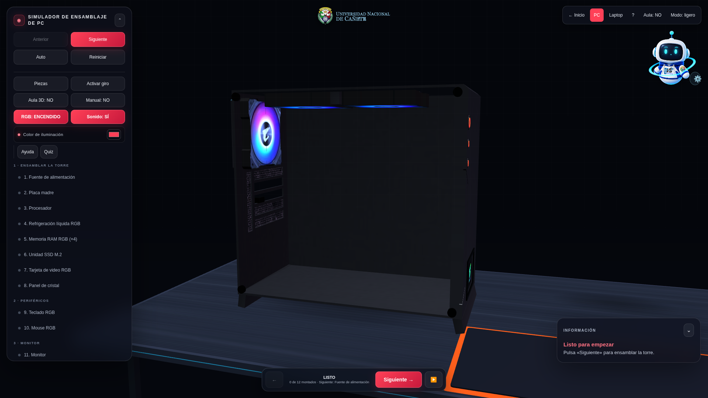
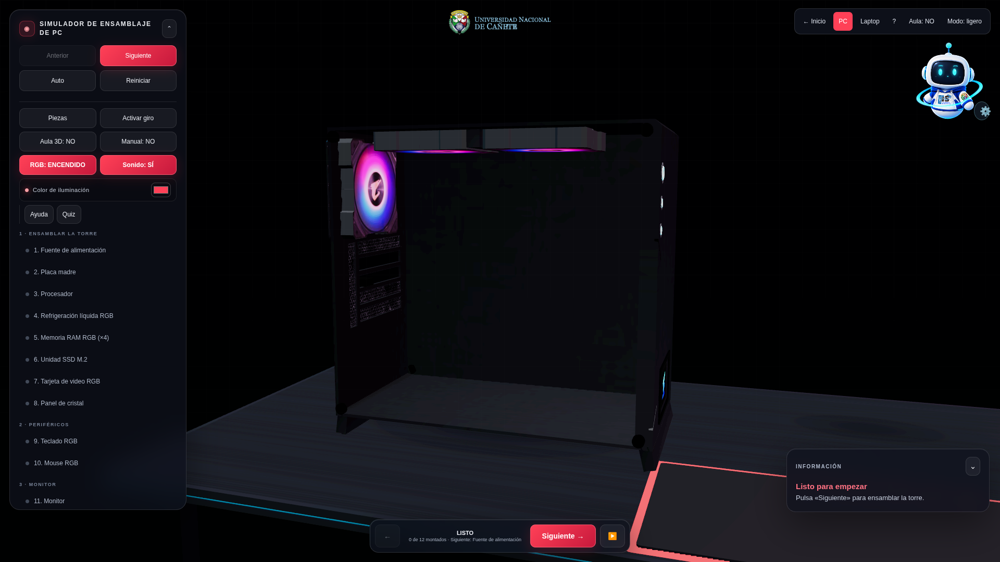
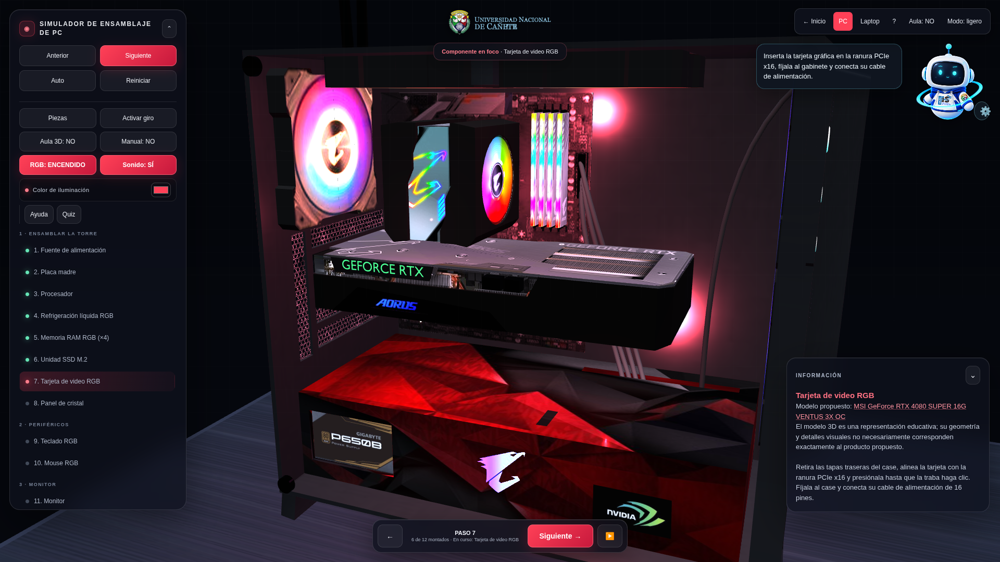
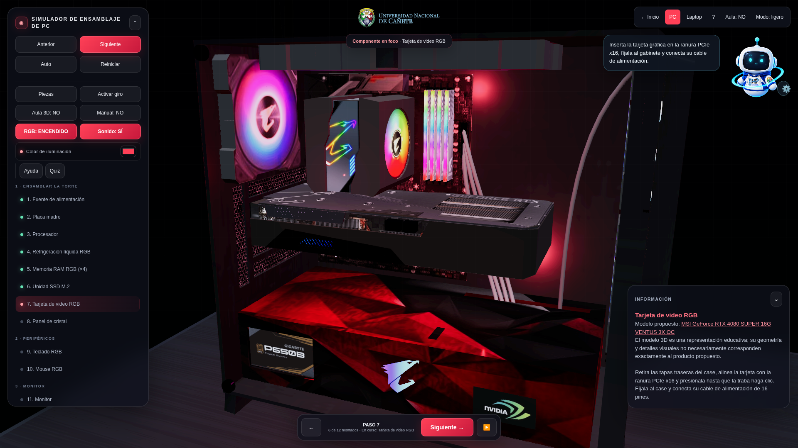
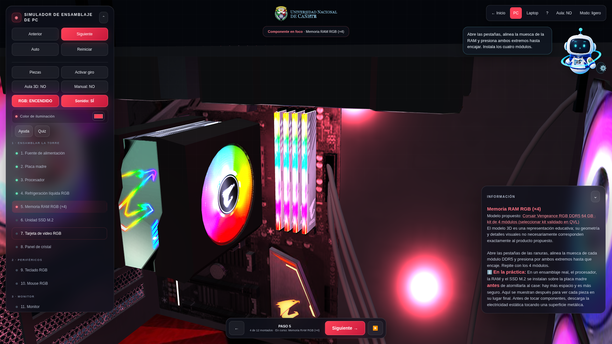
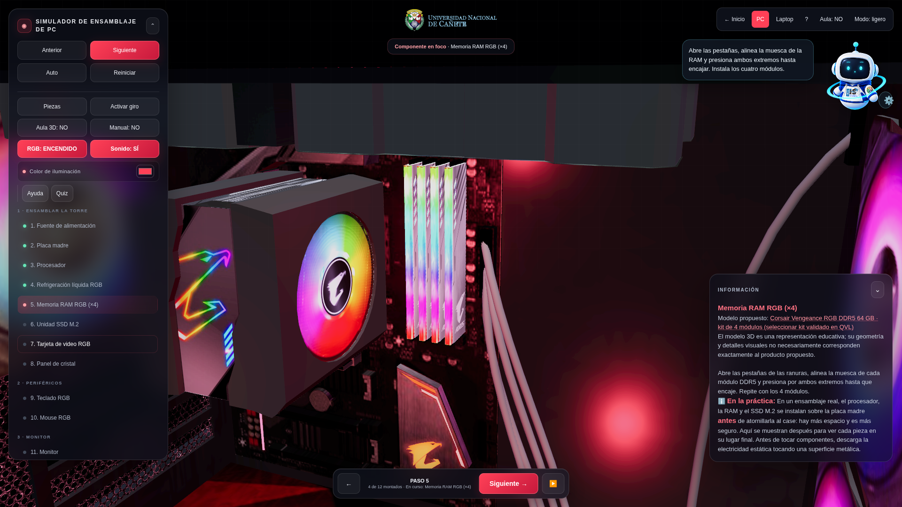
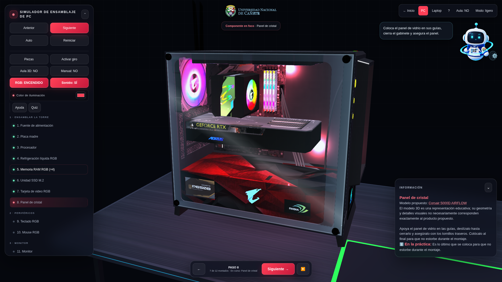
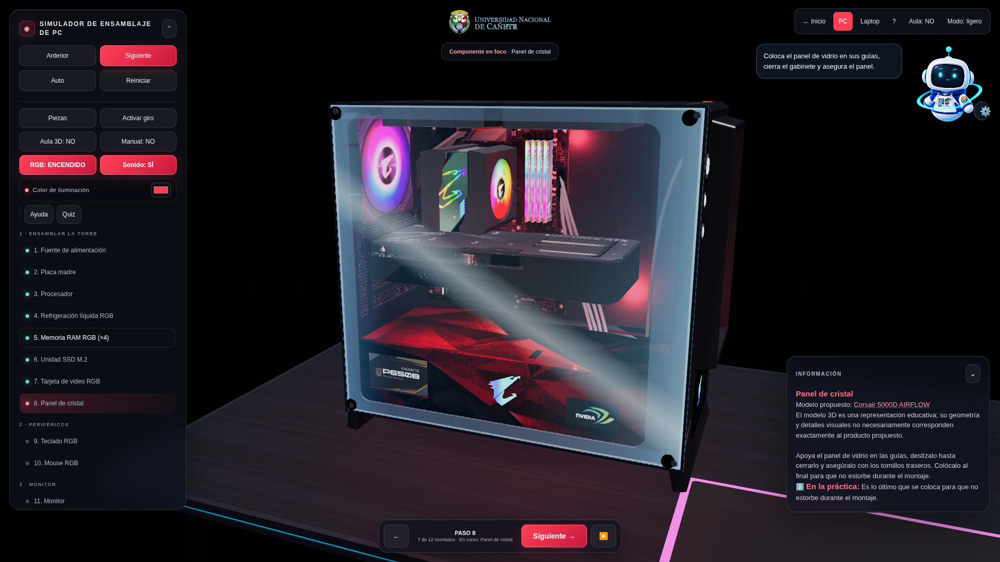
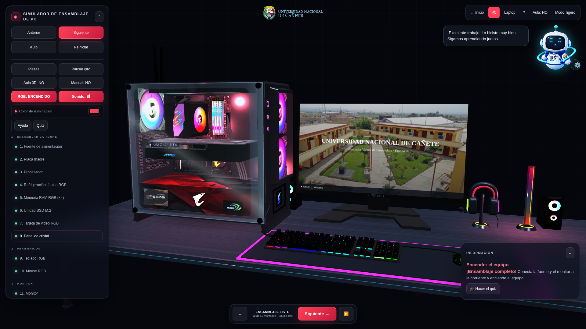
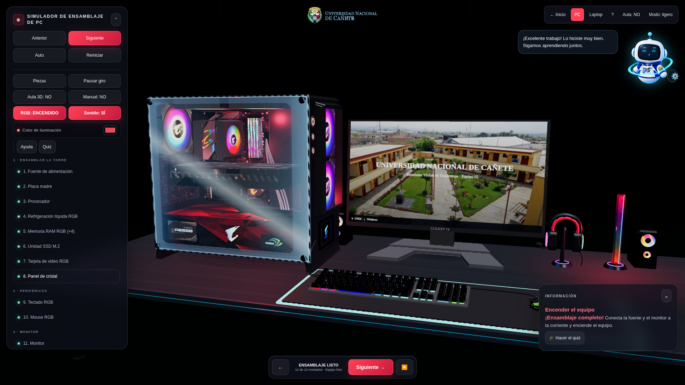
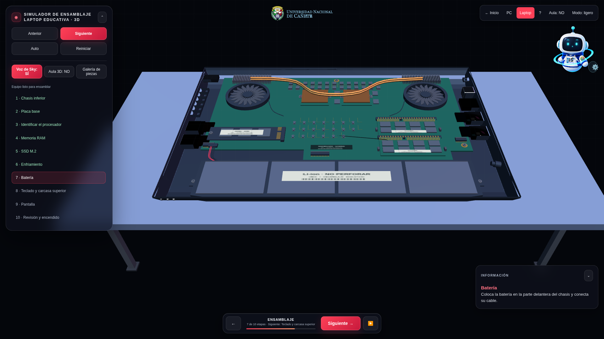
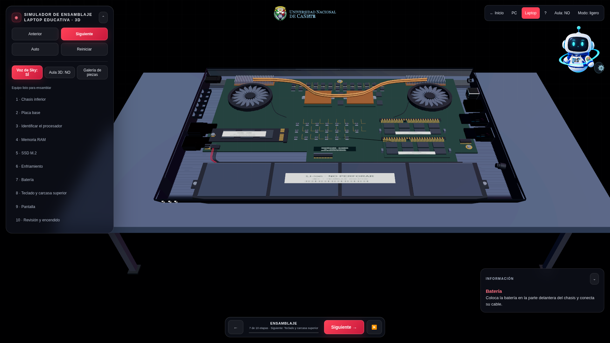